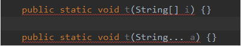

今天为什么我会写这篇博客呢，一个可变参数而已，也没什么技术含量，原因是因为，今天朋友看我代码的时候问我，这个是什么
1 public static void k(String... str){}
2 //代码我就不放上来了，比较长，就简短的写个例子当时我很惊讶，问他，这个你不知道吗，很早就出了，然后和他解释了一番，随后想了一下，可能是教他的老师，不在乎，或是赶课程，把这个可变参数跳过了。
好了，闲话少说，步如正题：
可变参数是在jdk1.5的时候，推出的新特性。
顾名思义，就是可以变换的参数列表，这个参数可多可少，比如说，你又一个方法，这个方法一般写的话，参数是固定的，俩个参数就是俩个参数，一个参数就是参数，而这个可变参数，就是，在你使用它的时候，他可以是俩个也可以是三个也可以是一个。
可变参数底层实现是数组，可以做一个简单的测试如下：

大家可以看到，在编译阶段它就报错了，之所以会报错，是因为，可变参数的底层实现就是数组，上面我们是用String，所以编译的时候，可变参数会转成String[]（方法的可变参数在编译时会被看成具有相同类型的一维数组），这时它们的参数就一样了，冲突了，所以会报错。
### 可变参数怎么用呢？
可变参数的使用很简单，只要在方法参数的类型后面加三个点就可以了
1 public static void t(String... a) {}同时也要注意，可变参数只能写在参数列表的最后一个，否则在编译时就会报错
还要注意，一个方法的参数列表里只能有一个可变参数
其实这个也可以说是和可变参数只能放在最后一个相互印证了
1 public static void main(String[] args) {
2 t(1,2.0,"张三","李四","王五");
3 }
4 public static void t(int i,double d,String... str) {
5 System.out.println(str.length);
6 }
输出结果:
========
1 3可变参数在你确定不了方法参数的时候，或则你方法的参数可能会存在增加/减少的时候用。